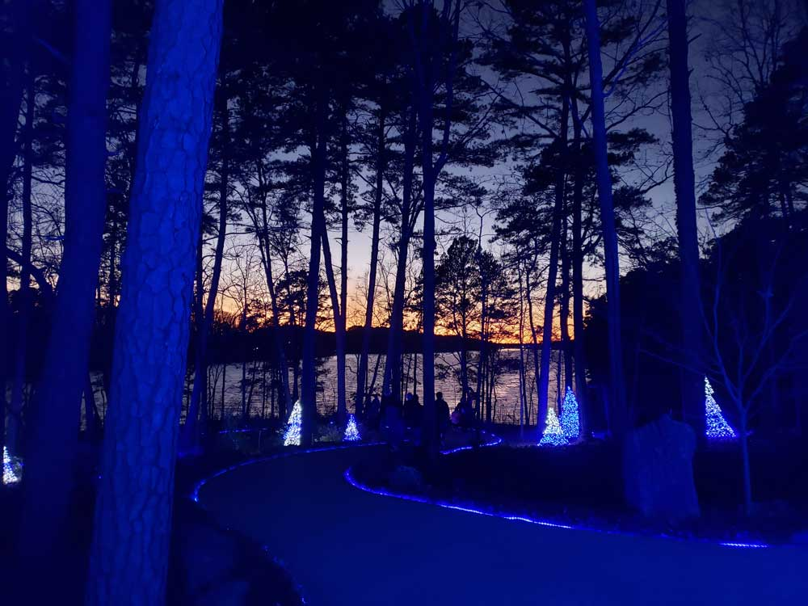
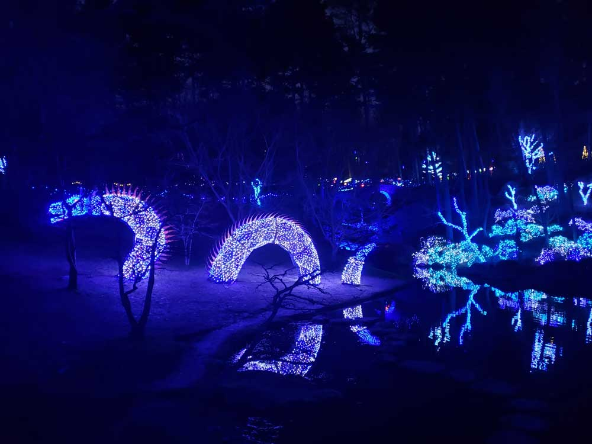
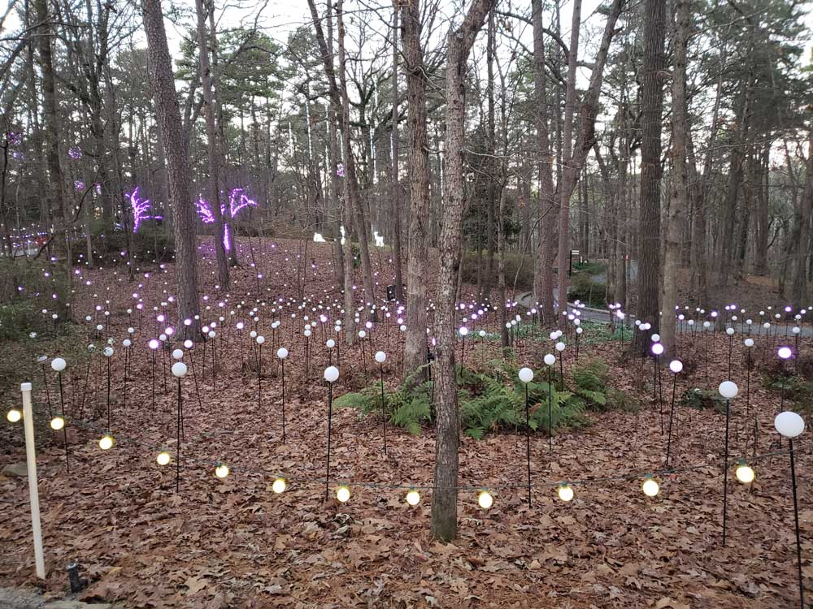
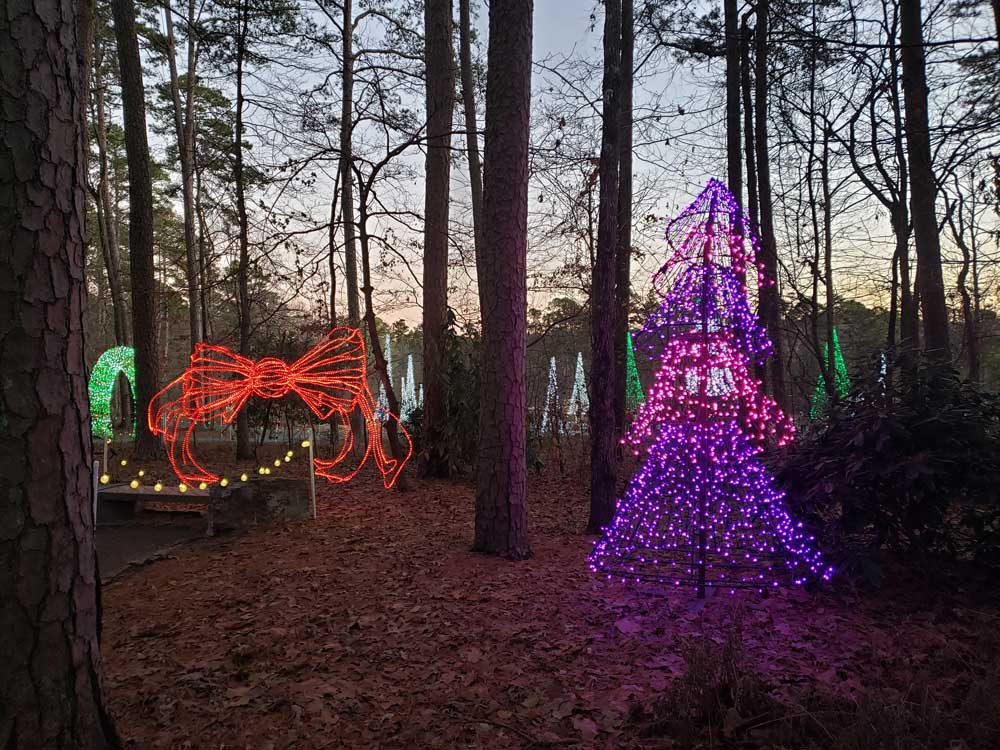

.jpg){kind=link}
General Information
How to Get There
Overview
The Ozarks, also known as the Ozark Mountains or Ozark Plateau, is a physiographic region in the states of Missouri, Arkansas, Oklahoma and the extreme southeastern corner of Kansas. The Ozarks cover a significant portion of northern Arkansas and most of the southern half of Missouri, extending from Interstate 40 in central Arkansas to Interstate 70 in central Missouri.
There are two mountain ranges within the Ozarks: the Boston Mountains of Arkansas and the St. Francois Mountains of Missouri. Buffalo Lookout, the highest point in the Ozarks, is located in the Boston Mountains. Geologically, the area is a broad dome with the exposed core in the ancient St. Francois Mountains. The Ozarks cover nearly 47,000 square miles (120,000 km2), making it the most extensive highland region between the Appalachians and Rockies. Together with the Ouachita Mountains, the area is known as the U.S. Interior Highlands.
The Salem Plateau, named after Salem, Missouri, makes up the largest geologic area of the Ozarks. The second largest is the Springfield Plateau, named after Springfield, Missouri, nicknamed the "Queen City of the Ozarks". On the northern Ozark border are the cities of St. Louis and Columbia, Missouri. Significant Ozark cities in Arkansas include Fayetteville, Bentonville, Springdale, Eureka Springs, and Fort Smith. Branson, just north of the Arkansas-Missouri border, is a tourist destination and popularizer of Ozark culture.
The Ozarks consist of five physiographic subregions: the Boston Mountains of north Arkansas and Cookson Hills of east Oklahoma; the Springfield Plateau of southwest Missouri, northeast Oklahoma, and northwest Arkansas and including Springfield, Joplin and Monett/Aurora in Missouri, Tahlequah in Oklahoma, and Fayetteville and Harrison in Arkansas; the White River Hills along the White River, including Branson and Mountain Home to Batesville; the Salem Plateau or Central Plateau, which includes a broad band across south central Missouri and north central Arkansas including the Lebanon, Salem and West Plains areas; the Courtois Hills of southeastern Missouri; the Osage-Gasconade Hills around the Lake of the Ozarks; the Saint Francois Mountains; and the Missouri River and Mississippi River border areas along the eastern and northeastern flanks.
Karst features such as springs, losing streams, sinkholes and caves are common in the limestones of the Springfield Plateau and abundant in the dolomite bedrock of the Salem Plateau and Boston Mountains. Missouri is known as "The Cave State" with over 7,300 recorded caves, second in number only to Tennessee. The majority of these caves are found in the Ozark counties. The Ozark Plateaus aquifer system affects groundwater movement in all areas except the igneous core of the St. Francois Mountains. Geographic features include limestone and dolomite glades, which are rocky, desert-like areas on hilltops. Kept open by periodic fires that limit growth of grasses and forbs in shallow soil, glades are home to collared lizards, tarantulas, scorpions, cacti and other species more typical of the Desert Southwest.
Topography is mostly gently rolling in the Springfield and Salem plateaus, whereas the Saint Francois Mountains are more rugged. Although the Springfield formation's surface is primarily Mississippian limestone and chert, the Salem Plateau is made of older Ordovician dolomites, limestones, and sandstones. Both are rife with karst topography and form long, flat plains. The formations are separated by steep escarpments that dramatically interrupt the rolling hills. Although much of the Springfield Plateau has been denuded of the surface layers of the Boston Mountains, large remnants of these younger layers are present throughout the southern end of the formation, possibly suggesting a peneplain process. The Springfield Plateau drains through wide, mature streams ultimately feeding the White River.
Formal conservation in the region began when the Ozark National Forest was created by proclamation of President Theodore Roosevelt in 1908 to preserve 917,944 acres (3,714.79 km2) across five Arkansas counties. Another 608,537 acres (2,462.66 km2) were added the following year. The initial forest included area as far south as Mount Magazine and as far east as Sylamore.
In 1939, Congress established Mark Twain National Forest at nine sites in Missouri. Wildlife management areas were founded in the 1920s and '30s to restore populations to viable numbers. In the 1930s and 1940s Aldo Leopold, Arthur Carhart and Bob Marshall developed a "wilderness" policy for the Forest Service. Their efforts bore fruit with The Wilderness Act of 1964 which designated wilderness areas "where the earth and its community of life are untrammeled by men, where man himself is a visitor and does not remain", though this included second growth public forests like the Mark Twain National Forest.
Land was also added to Ozark National Forest during this period, with over 544,000 acres (2,200 km2) in total additions. Some land was reclaimed by the government through the Resettlement Administration during the Great Depression. In 1976, Congress established the Hercules Glades Wilderness, the first of 13 designated wilderness areas in the Ozarks. In 1986, Congress established the Ozark Plateau National Wildlife Refuge in northeast Oklahoma. Protected areas ensure the recovery of endangered and threatened species of animals and plants, including the Ozark big-eared bat, Indiana bat, eastern small-footed bat, southeastern bat, southeastern big-eared bat; longnose darter, Ozark cavefish, Ozark cave crayfish, Bowman's cave amphipod, Ozark cave amphipod, bat cave isopod; and Ozark chinquapin. It is a habitat of migratory birds and contains geological, archeological, historical, and paleontological resources.
The Army Corps of Engineers lakes that were created by damming the White River beginning in 1911 with Lake Taneycomo have provided a large tourist, boating and fishing economy along the Missouri-Arkansas border. Six lakes were created by dams in the White River basin from 1911 through 1960. White River lakes include Lake Sequoyah, a small recreational fishing lake east of Fayetteville, Arkansas, formed in 1961; Sequoyah is the uppermost impoundment on the White River. Below Sequoyah (northeast of Fayetteville) is Beaver Lake, formed in 1960. The White River continues northeasterly into Table Rock Lake (1958) in Missouri, which feeds directly into Taneycomo, where the river zigzags southeasterly into Arkansas forming Bull Shoals Lake along the Arkansas-Missouri line. Completed in 1952, Bull Shoals is the furthest downstream lake on the White River proper. Norfork Lake was formed by damming the North Fork River, a tributary of the White River, in 1941.
The Lake of the Ozarks, Pomme de Terre Lake, and Truman Lake in the northern Ozarks were formed by impounding the Osage River and its tributary the Pomme de Terre River in 1931, 1961 and 1979 respectively. Grand Lake in northeast Oklahoma was created in 1940. Stockton Lake was formed by damming the Sac River near the city of Stockton, Missouri, in 1969 and supplements the water supply of Springfield in nearby Greene County. Most of the dams were built for the dual purpose of flood control and hydropower generation.
The Buffalo National River was created by an Act of Congress in 1972 as the nation's first National River, administered by the National Park Service. Today, the Buffalo sees approximately 800,000 visitors camping, canoeing, floating, hiking, and tubing annually. In Missouri, the Ozark National Scenic Riverways was established in 1964 along the Current and Jacks Fork rivers as the first US national park based on a river system. The Eleven Point River is included in the National Wild and Scenic Rivers System established in 1968. These river parks annually draw a combined 1.5 million recreational tourists to the least populated counties in Arkansas and Missouri.
Many other waterways and streams have their headwaters in the Boston Mountains such as the Mulberry River, the White River, War Eagle Creek, Little Mulberry Creek, Lee Creek, Big Piney Creek, and the Little Red River. To the south, the Arkansas River valley separates the Boston Mountains from the Ouachita Mountains.
Missouri Ozark rivers include the Gasconade, Big Piney, and Niangua rivers in the north central region. The Meramec River and its tributaries Huzzah Creek and Courtois Creek are found in the northeastern Ozarks. The Black and St. Francis rivers mark the eastern crescent of the Ozarks. The James, Spring and North Fork rivers are in south-central Missouri. Forming the west central border of the Ozarks from Missouri through Kansas and into Oklahoma are the Spring River and its tributary, Center Creek. Grand Falls, Missouri's largest natural waterfall, a chert outcropping, includes bluffs and glades on Shoal Creek south of Joplin. All these river systems see heavy recreational use in season, including the Elk River in southwestern Missouri and its tributary Big Sugar Creek.
Ozark rivers and streams are typically clear water, with baseflows sustained by many seeps and springs, and flow through forests along limestone and dolomite bluffs. Gravel bars are common along shallow banks, while deep holes are found along bluffs. Except during periods of heavy rain or snow melt - when water levels rise quite rapidly - their level of difficulty is suitable for most canoeing and tubing.
Fish hatcheries are common due to the abundance of springs and waterways. The Neosho National Fish Hatchery was built in 1888; it was the first federal hatchery. The Arkansas Game and Fish Commission, Missouri Department of Conservation and U.S. Fish and Wildlife Service operate numerous warm and cold water hatcheries and trout parks; private hatcheries such as at Rockbridge are found throughout the region.
During the New Deal, the Civilian Conservation Corps employed hundreds in the construction of nearly 400 fire lookouts throughout the Ozarks at 121 known sites in Arkansas and 257 in Missouri. Of those lookouts, about half remain, and many of them are in use by the U.S. Forest Service. A 2007 report by the National Trust for Historic Preservation deemed these fire lookouts and related structures as one of America's 11 Most Endangered Historic Places.
This article uses material from the Wikipedia article "Ozarks", which is released under the Creative Commons Attribution-Share-Alike License 3.0



